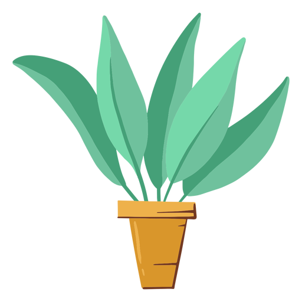

<ion-header>
  <ion-toolbar class="toolbar-home">
    <ion-buttons slot="start" class="toolbar-salir">
      <ion-button color="dark" (click)="back()">Salir</ion-button>
    </ion-buttons>
    <ion-title class="toolbar-logo"></ion-title>
    <ion-buttons slot="end" class="toolbar-mas"> 
      <ion-button (click)="back()"><ion-icon name="add-outline"></ion-icon></ion-button>
    </ion-buttons>
  </ion-toolbar>
</ion-header>

<ion-content>
  <div class="superior-home">
    <ion-button class="boton-i" fill="clear">
      <ion-icon name="caret-back" class="flechas-home"></ion-icon>
    </ion-button>
    
    <ion-button class="boton-d" fill="clear">
      <ion-icon name="caret-forward" class="flechas-home"></ion-icon>
    </ion-button>
  </div>
  <div class="inferior">
    <div>
      <ion-progress-bar color="secondary" value="0.5"></ion-progress-bar>
    </div>
    <div>
      <ion-progress-bar color="warning" value="0.8"></ion-progress-bar>
    </div>
    <div>
      <ion-progress-bar color="danger" value="0.2"></ion-progress-bar>
    </div>
  </div>
</ion-content>

<ion-footer>

</ion-footer>
